system.time(data1<-read.csv("/Users/huxuyi/mimic/core/admissions.csv.gz")) user system elapsed
12.941 0.303 13.340 Due Feb 10 @ 11:59PM
Display machine information for reproducibility: ::: {.cell layout-align=“center”}
sessionInfo():::
Load necessary libraries (you can add more as needed). ::: {.cell layout-align=“center”}
library(data.table)
library(lubridate)
library(R.utils)
library(tidyverse)
library(caret):::
MIMIC data location ::: {.cell layout-align=“center”}
mimic_path <- "~/mimic":::
In this exercise, we use tidyverse (ggplot2, dplyr, etc) to explore the MIMIC-IV data introduced in homework 1 and to build a cohort of ICU stays.
Display the contents of MIMIC data folder. ::: {.cell layout-align=“center”}
system(str_c("ls -l ", mimic_path, "/"), intern = TRUE)[1] "total 24"
[2] "-rw-rw-r--@ 1 huxuyi staff 2518 Mar 10 2021 LICENSE.txt"
[3] "drwxr-xr-x@ 5 huxuyi staff 160 Jan 20 21:09 MIMIC-reduce-chartevents"
[4] "-rw-rw-r--@ 1 huxuyi staff 2459 Mar 16 2021 SHA256SUMS.txt"
[5] "drwxr-xr-x@ 6 huxuyi staff 192 Jan 20 21:08 core"
[6] "drwxr-xr-x@ 21 huxuyi staff 672 Jan 20 21:08 hosp"
[7] "lrwxr-xr-x 1 huxuyi staff 13 Jan 20 21:33 huxuyi -> /Users/huxuyi"
[8] "drwxr-xr-x@ 11 huxuyi staff 352 Jan 20 21:09 icu"
[9] "-rw-rw-r--@ 1 huxuyi staff 797 Jan 4 2022 index.html" system(str_c("ls -l ", mimic_path, "/core"), intern = TRUE)[1] "total 142944"
[2] "-rw-rw-r--@ 1 huxuyi staff 17208966 Mar 15 2021 admissions.csv.gz"
[3] "-rw-rw-r--@ 1 huxuyi staff 606 Jan 4 2022 index.html"
[4] "-rw-rw-r--@ 1 huxuyi staff 2955582 Mar 15 2021 patients.csv.gz"
[5] "-rw-rw-r--@ 1 huxuyi staff 53014503 Mar 15 2021 transfers.csv.gz" system(str_c("ls -l ", mimic_path, "/hosp"), intern = TRUE) [1] "total 9243184"
[2] "-rw-rw-r--@ 1 huxuyi staff 430049 Mar 15 2021 d_hcpcs.csv.gz"
[3] "-rw-rw-r--@ 1 huxuyi staff 863239 Mar 15 2021 d_icd_diagnoses.csv.gz"
[4] "-rw-rw-r--@ 1 huxuyi staff 579998 Mar 15 2021 d_icd_procedures.csv.gz"
[5] "-rw-rw-r--@ 1 huxuyi staff 14898 Mar 15 2021 d_labitems.csv.gz"
[6] "-rw-rw-r--@ 1 huxuyi staff 29531152 Mar 15 2021 diagnoses_icd.csv.gz"
[7] "-rw-rw-r--@ 1 huxuyi staff 11684062 Mar 15 2021 drgcodes.csv.gz"
[8] "-rw-rw-r--@ 1 huxuyi staff 515763427 Mar 15 2021 emar.csv.gz"
[9] "-rw-rw-r--@ 1 huxuyi staff 476252563 Mar 15 2021 emar_detail.csv.gz"
[10] "-rw-rw-r--@ 1 huxuyi staff 2098831 Mar 15 2021 hcpcsevents.csv.gz"
[11] "-rw-rw-r--@ 1 huxuyi staff 2325 Jan 4 2022 index.html"
[12] "-rw-rw-r--@ 1 huxuyi staff 2091865786 Mar 15 2021 labevents.csv.gz"
[13] "-rw-rw-r--@ 1 huxuyi staff 171624288 Jan 27 2022 labevents_filtered_itemid.csv.gz"
[14] "-rw-rw-r--@ 1 huxuyi staff 99133381 Mar 15 2021 microbiologyevents.csv.gz"
[15] "-rw-rw-r--@ 1 huxuyi staff 422874088 Mar 15 2021 pharmacy.csv.gz"
[16] "-rw-rw-r--@ 1 huxuyi staff 501381155 Mar 15 2021 poe.csv.gz"
[17] "-rw-rw-r--@ 1 huxuyi staff 24020923 Mar 15 2021 poe_detail.csv.gz"
[18] "-rw-rw-r--@ 1 huxuyi staff 367041717 Mar 15 2021 prescriptions.csv.gz"
[19] "-rw-rw-r--@ 1 huxuyi staff 7750325 Mar 15 2021 procedures_icd.csv.gz"
[20] "-rw-rw-r--@ 1 huxuyi staff 9565293 Mar 15 2021 services.csv.gz" system(str_c("ls -l ", mimic_path, "/icu"), intern = TRUE) [1] "total 5698008"
[2] "-rw-rw-r--@ 1 huxuyi staff 2350783547 Mar 15 2021 chartevents.csv.gz"
[3] "-rw-rw-r--@ 1 huxuyi staff 110272408 Jan 27 2022 chartevents_filtered_itemid.csv.gz"
[4] "-rw-rw-r--@ 1 huxuyi staff 55917 Mar 15 2021 d_items.csv.gz"
[5] "-rw-rw-r--@ 1 huxuyi staff 43296273 Mar 15 2021 datetimeevents.csv.gz"
[6] "-rw-rw-r--@ 1 huxuyi staff 2848628 Mar 15 2021 icustays.csv.gz"
[7] "-rw-rw-r--@ 1 huxuyi staff 1103 Jan 4 2022 index.html"
[8] "-rw-rw-r--@ 1 huxuyi staff 352443512 Mar 15 2021 inputevents.csv.gz"
[9] "-rw-rw-r--@ 1 huxuyi staff 37095672 Mar 15 2021 outputevents.csv.gz"
[10] "-rw-rw-r--@ 1 huxuyi staff 20567368 Mar 15 2021 procedureevents.csv.gz" :::
read.csv (base R) vs read_csv (tidyverse) vs fread (data.table)There are quite a few utilities in R for reading plain text data files. Let us test the speed of reading a moderate sized compressed csv file, admissions.csv.gz, by three programs: read.csv in base R, read_csv in tidyverse, and fread in the popular data.table package.
Which function is fastest? Is there difference in the (default) parsed data types? (Hint: R function system.time measures run times.)
For later questions, we stick to the read_csv in tidyverse.
system.time(data1<-read.csv("/Users/huxuyi/mimic/core/admissions.csv.gz")) user system elapsed
12.941 0.303 13.340 system.time(data2<-read_csv("/Users/huxuyi/mimic/core/admissions.csv.gz")) user system elapsed
3.113 0.783 1.505 system.time(data3<-fread("/Users/huxuyi/mimic/core/admissions.csv.gz")) user system elapsed
1.027 0.364 1.409 So, according to the results, ‘fread’ is the fastest.
str(data1)'data.frame': 523740 obs. of 15 variables:
$ subject_id : int 14679932 15585972 11989120 17817079 15078341 19124609 17301855 17991012 16865435 13693648 ...
$ hadm_id : int 21038362 24941086 21965160 24709883 23272159 20517215 29732723 24298836 23216961 21640725 ...
$ admittime : chr "2139-09-26 14:16:00" "2123-10-07 23:56:00" "2147-01-14 09:00:00" "2165-12-27 17:33:00" ...
$ dischtime : chr "2139-09-28 11:30:00" "2123-10-12 11:22:00" "2147-01-17 14:25:00" "2165-12-31 21:18:00" ...
$ deathtime : chr "" "" "" "" ...
$ admission_type : chr "ELECTIVE" "ELECTIVE" "ELECTIVE" "ELECTIVE" ...
$ admission_location : chr "" "" "" "" ...
$ discharge_location : chr "HOME" "HOME" "HOME" "HOME" ...
$ insurance : chr "Other" "Other" "Other" "Other" ...
$ language : chr "ENGLISH" "ENGLISH" "ENGLISH" "ENGLISH" ...
$ marital_status : chr "SINGLE" "" "" "" ...
$ ethnicity : chr "UNKNOWN" "WHITE" "UNKNOWN" "OTHER" ...
$ edregtime : chr "" "" "" "" ...
$ edouttime : chr "" "" "" "" ...
$ hospital_expire_flag: int 0 0 0 0 0 0 0 0 0 0 ...str(data2)spc_tbl_ [523,740 × 15] (S3: spec_tbl_df/tbl_df/tbl/data.frame)
$ subject_id : num [1:523740] 14679932 15585972 11989120 17817079 15078341 ...
$ hadm_id : num [1:523740] 21038362 24941086 21965160 24709883 23272159 ...
$ admittime : POSIXct[1:523740], format: "2139-09-26 14:16:00" "2123-10-07 23:56:00" ...
$ dischtime : POSIXct[1:523740], format: "2139-09-28 11:30:00" "2123-10-12 11:22:00" ...
$ deathtime : POSIXct[1:523740], format: NA NA ...
$ admission_type : chr [1:523740] "ELECTIVE" "ELECTIVE" "ELECTIVE" "ELECTIVE" ...
$ admission_location : chr [1:523740] NA NA NA NA ...
$ discharge_location : chr [1:523740] "HOME" "HOME" "HOME" "HOME" ...
$ insurance : chr [1:523740] "Other" "Other" "Other" "Other" ...
$ language : chr [1:523740] "ENGLISH" "ENGLISH" "ENGLISH" "ENGLISH" ...
$ marital_status : chr [1:523740] "SINGLE" NA NA NA ...
$ ethnicity : chr [1:523740] "UNKNOWN" "WHITE" "UNKNOWN" "OTHER" ...
$ edregtime : POSIXct[1:523740], format: NA NA ...
$ edouttime : POSIXct[1:523740], format: NA NA ...
$ hospital_expire_flag: num [1:523740] 0 0 0 0 0 0 0 0 0 0 ...
- attr(*, "spec")=
.. cols(
.. subject_id = col_double(),
.. hadm_id = col_double(),
.. admittime = col_datetime(format = ""),
.. dischtime = col_datetime(format = ""),
.. deathtime = col_datetime(format = ""),
.. admission_type = col_character(),
.. admission_location = col_character(),
.. discharge_location = col_character(),
.. insurance = col_character(),
.. language = col_character(),
.. marital_status = col_character(),
.. ethnicity = col_character(),
.. edregtime = col_datetime(format = ""),
.. edouttime = col_datetime(format = ""),
.. hospital_expire_flag = col_double()
.. )
- attr(*, "problems")=<externalptr> str(data3)Classes 'data.table' and 'data.frame': 523740 obs. of 15 variables:
$ subject_id : int 14679932 15585972 11989120 17817079 15078341 19124609 17301855 17991012 16865435 13693648 ...
$ hadm_id : int 21038362 24941086 21965160 24709883 23272159 20517215 29732723 24298836 23216961 21640725 ...
$ admittime : POSIXct, format: "2139-09-26 14:16:00" "2123-10-07 23:56:00" ...
$ dischtime : POSIXct, format: "2139-09-28 11:30:00" "2123-10-12 11:22:00" ...
$ deathtime : POSIXct, format: NA NA ...
$ admission_type : chr "ELECTIVE" "ELECTIVE" "ELECTIVE" "ELECTIVE" ...
$ admission_location : chr "" "" "" "" ...
$ discharge_location : chr "HOME" "HOME" "HOME" "HOME" ...
$ insurance : chr "Other" "Other" "Other" "Other" ...
$ language : chr "ENGLISH" "ENGLISH" "ENGLISH" "ENGLISH" ...
$ marital_status : chr "SINGLE" "" "" "" ...
$ ethnicity : chr "UNKNOWN" "WHITE" "UNKNOWN" "OTHER" ...
$ edregtime : POSIXct, format: NA NA ...
$ edouttime : POSIXct, format: NA NA ...
$ hospital_expire_flag: int 0 0 0 0 0 0 0 0 0 0 ...
- attr(*, ".internal.selfref")=<externalptr> So, read.csv can not read datetime but read_csv and fread can.
icustays.csv.gz (https://mimic.mit.edu/docs/iv/modules/icu/icustays/) contains data about Intensive Care Units (ICU) stays. The first 10 lines are ::: {.cell layout-align=“center”}
system(
str_c(
"gzcat < ",
str_c(mimic_path, "/icu/icustays.csv.gz"),
" | head"
),
intern = TRUE
) [1] "subject_id,hadm_id,stay_id,first_careunit,last_careunit,intime,outtime,los"
[2] "17867402,24528534,31793211,Trauma SICU (TSICU),Trauma SICU (TSICU),2154-03-03 04:11:00,2154-03-04 18:16:56,1.5874537037037035"
[3] "14435996,28960964,31983544,Trauma SICU (TSICU),Trauma SICU (TSICU),2150-06-19 17:57:00,2150-06-22 18:33:54,3.025625"
[4] "17609946,27385897,33183475,Trauma SICU (TSICU),Trauma SICU (TSICU),2138-02-05 18:54:00,2138-02-15 12:42:05,9.741724537037038"
[5] "18966770,23483021,34131444,Trauma SICU (TSICU),Trauma SICU (TSICU),2123-10-25 10:35:00,2123-10-25 18:59:47,0.35054398148148147"
[6] "12776735,20817525,34547665,Neuro Stepdown,Neuro Stepdown,2200-07-12 00:33:00,2200-07-13 16:44:40,1.6747685185185184"
[7] "10215159,24283593,34569476,Trauma SICU (TSICU),Trauma SICU (TSICU),2124-09-20 15:05:29,2124-09-21 22:06:58,1.2926967592592593"
[8] "14489052,26516390,35056286,Trauma SICU (TSICU),Trauma SICU (TSICU),2118-10-26 10:33:56,2118-10-26 20:28:10,0.4126620370370371"
[9] "15914763,28906020,36909804,Trauma SICU (TSICU),Trauma SICU (TSICU),2176-12-14 12:00:00,2176-12-17 11:47:01,2.9909837962962964"
[10] "16256226,20013290,39289362,Neuro Stepdown,Neuro Stepdown,2150-12-20 16:09:08,2150-12-21 14:58:40,0.9510648148148149" :::
icustatys.csv.gz as a tibble icustays_tble.icustays_tble <- as_tibble(read_csv(str_c(mimic_path, "/icu/icustays.csv.gz")))subject_id? Can a subject_id have multiple ICU stays?n_distinct(icustays_tble$subject_id)[1] 53150n_distinct(icustays_tble$stay_id)[1] 7654053150 unique subject_id. Yes, since there are more stay_ids than subject_ids.
subject_id by graphs.freq<-icustays_tble[,c(1,3)] %>%
group_by(subject_id) %>%
summarise(stays=n())
ggplot(data=freq) +
geom_freqpoly(mapping = aes(x=stays)) +
labs(title="Freqrency plot of the number of ICU stays per 'subject_id'")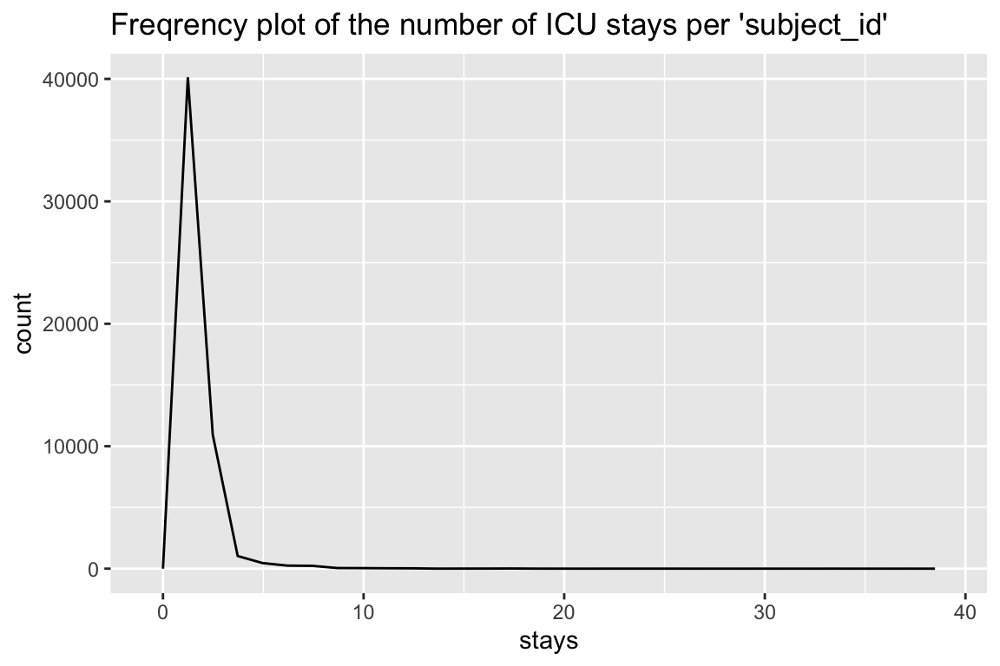
subject_id, let’s only keep the first ICU stay in the tibble icustays_tble. (Hint: slice_min and slice_max may take long. Think alternative ways to achieve the same function.)icustays_tble<-
icustays_tble %>%
arrange(intime) %>%
group_by(subject_id) %>%
slice_head(n=1) %>%
ungroup() %>%
print(width=Inf)# A tibble: 53,150 × 8
subject_id hadm_id stay_id first_careunit
<dbl> <dbl> <dbl> <chr>
1 10000032 29079034 39553978 Medical Intensive Care Unit (MICU)
2 10000980 26913865 39765666 Medical Intensive Care Unit (MICU)
3 10001217 24597018 37067082 Surgical Intensive Care Unit (SICU)
4 10001725 25563031 31205490 Medical/Surgical Intensive Care Unit (MICU/SICU)
5 10001884 26184834 37510196 Medical Intensive Care Unit (MICU)
6 10002013 23581541 39060235 Cardiac Vascular Intensive Care Unit (CVICU)
7 10002155 23822395 33685454 Coronary Care Unit (CCU)
8 10002223 22494570 39638202 Trauma SICU (TSICU)
9 10002348 22725460 32610785 Neuro Intermediate
10 10002428 28662225 33987268 Medical Intensive Care Unit (MICU)
last_careunit intime
<chr> <dttm>
1 Medical Intensive Care Unit (MICU) 2180-07-23 14:00:00
2 Medical Intensive Care Unit (MICU) 2189-06-27 08:42:00
3 Surgical Intensive Care Unit (SICU) 2157-11-20 19:18:02
4 Medical/Surgical Intensive Care Unit (MICU/SICU) 2110-04-11 15:52:22
5 Medical Intensive Care Unit (MICU) 2131-01-11 04:20:05
6 Cardiac Vascular Intensive Care Unit (CVICU) 2160-05-18 10:00:53
7 Coronary Care Unit (CCU) 2129-08-04 12:45:00
8 Trauma SICU (TSICU) 2158-01-15 08:01:49
9 Neuro Intermediate 2112-11-30 23:24:00
10 Medical Intensive Care Unit (MICU) 2156-04-12 16:24:18
outtime los
<dttm> <dbl>
1 2180-07-23 23:50:47 0.410
2 2189-06-27 20:38:27 0.498
3 2157-11-21 22:08:00 1.12
4 2110-04-12 23:59:56 1.34
5 2131-01-20 08:27:30 9.17
6 2160-05-19 17:33:33 1.31
7 2129-08-10 17:02:38 6.18
8 2158-01-16 15:19:24 1.30
9 2112-12-10 18:25:13 9.79
10 2156-04-17 15:57:08 4.98
# … with 53,140 more rows# first_icu<-icustays_tble%>%
# arrange(intime) %>%
# distinct() %>%
# print(width=Inf)admission dataInformation of the patients admitted into hospital is available in admissions.csv.gz. See https://mimic.mit.edu/docs/iv/modules/hosp/admissions/ for details of each field in this file. The first 10 lines are ::: {.cell layout-align=“center”}
system(
str_c(
"zcat < ",
str_c(mimic_path, "/core/admissions.csv.gz"),
" | head"
),
intern = TRUE
) [1] "subject_id,hadm_id,admittime,dischtime,deathtime,admission_type,admission_location,discharge_location,insurance,language,marital_status,ethnicity,edregtime,edouttime,hospital_expire_flag"
[2] "14679932,21038362,2139-09-26 14:16:00,2139-09-28 11:30:00,,ELECTIVE,,HOME,Other,ENGLISH,SINGLE,UNKNOWN,,,0"
[3] "15585972,24941086,2123-10-07 23:56:00,2123-10-12 11:22:00,,ELECTIVE,,HOME,Other,ENGLISH,,WHITE,,,0"
[4] "11989120,21965160,2147-01-14 09:00:00,2147-01-17 14:25:00,,ELECTIVE,,HOME,Other,ENGLISH,,UNKNOWN,,,0"
[5] "17817079,24709883,2165-12-27 17:33:00,2165-12-31 21:18:00,,ELECTIVE,,HOME,Other,ENGLISH,,OTHER,,,0"
[6] "15078341,23272159,2122-08-28 08:48:00,2122-08-30 12:32:00,,ELECTIVE,,HOME,Other,ENGLISH,,BLACK/AFRICAN AMERICAN,,,0"
[7] "19124609,20517215,2169-03-14 12:44:00,2169-03-20 19:15:00,,ELECTIVE,,HOME,Other,ENGLISH,,UNKNOWN,,,0"
[8] "17301855,29732723,2140-06-06 14:23:00,2140-06-08 14:25:00,,ELECTIVE,,HOME,Other,ENGLISH,,WHITE,,,0"
[9] "17991012,24298836,2181-07-10 20:28:00,2181-07-12 15:49:00,,ELECTIVE,,HOME,Other,ENGLISH,,WHITE,,,0"
[10] "16865435,23216961,2185-07-19 02:12:00,2185-07-21 11:50:00,,ELECTIVE,,HOME,Other,ENGLISH,,WHITE,,,0" :::
admissions.csv.gz as a tibble admissions_tble. ::: {.cell layout-align=“center”}admissions_tble<-as_tibble(read_csv(str_c(mimic_path,'/core/admissions.csv.gz'))):::
icustays_tble according to subject_id and hadmi_id.print(semi_join(admissions_tble,icustays_tble,key=c("subject_id"="subject_id","hadmi_id"="hadmi_id")),width=Inf)# A tibble: 53,150 × 15
subject_id hadm_id admittime dischtime
<dbl> <dbl> <dttm> <dttm>
1 10222255 28200985 2120-11-20 20:25:00 2120-11-22 13:00:00
2 14485852 28712010 2113-10-31 00:23:00 2113-11-04 16:50:00
3 18709254 23758948 2195-10-12 01:31:00 2195-10-12 13:51:00
4 16837807 23526268 2151-03-19 06:09:00 2151-03-19 07:20:00
5 17642680 27734285 2116-05-29 12:48:00 2116-05-30 12:31:00
6 18230965 21251728 2142-03-12 20:00:00 2142-03-17 15:26:00
7 17374121 27667114 2115-07-22 07:15:00 2115-07-24 17:50:00
8 13346506 28533404 2181-11-19 14:32:00 2181-11-22 18:47:00
9 18030332 24679656 2152-07-22 21:28:00 2152-07-27 16:49:00
10 14328744 29576470 2126-08-20 09:26:00 2126-08-21 11:36:00
deathtime admission_type admission_location
<dttm> <chr> <chr>
1 NA EU OBSERVATION TRANSFER FROM HOSPITAL
2 NA EW EMER. EMERGENCY ROOM
3 NA EU OBSERVATION EMERGENCY ROOM
4 2151-03-19 07:20:00 EU OBSERVATION EMERGENCY ROOM
5 NA EU OBSERVATION WALK-IN/SELF REFERRAL
6 NA URGENT PHYSICIAN REFERRAL
7 NA DIRECT OBSERVATION PHYSICIAN REFERRAL
8 NA EU OBSERVATION EMERGENCY ROOM
9 NA URGENT TRANSFER FROM HOSPITAL
10 NA EU OBSERVATION EMERGENCY ROOM
discharge_location insurance language marital_status ethnicity
<chr> <chr> <chr> <chr> <chr>
1 <NA> Other ENGLISH MARRIED WHITE
2 <NA> Other ENGLISH SINGLE WHITE
3 <NA> Medicaid ENGLISH WIDOWED ASIAN
4 <NA> Medicare ENGLISH SINGLE WHITE
5 <NA> Other ENGLISH SINGLE WHITE
6 HOME Other ENGLISH MARRIED WHITE
7 <NA> Other ENGLISH MARRIED WHITE
8 <NA> Other ENGLISH MARRIED WHITE
9 HOME Other ENGLISH MARRIED UNKNOWN
10 <NA> Other ENGLISH MARRIED WHITE
edregtime edouttime hospital_expire_flag
<dttm> <dttm> <dbl>
1 2120-11-20 18:07:00 2120-11-21 20:25:00 0
2 2113-10-30 19:48:00 2113-10-31 05:10:00 0
3 2195-10-11 18:40:00 2195-10-12 02:47:00 0
4 2151-03-19 02:55:00 2151-03-19 06:59:00 1
5 2116-05-29 10:05:00 2116-05-30 01:17:00 0
6 NA NA 0
7 NA NA 0
8 2181-11-19 10:51:00 2181-11-19 15:12:00 0
9 NA NA 0
10 2126-08-19 23:01:00 2126-08-20 10:14:00 0
# … with 53,140 more rowsSummarize the following variables by graphics.
adm_time<-bind_cols(
adm_year=year(admissions_tble$admittime),
adm_month=month(admissions_tble$admittime),
admi_md=mday(admissions_tble$admittime),
admi_wd=wday(admissions_tble$admittime),
admi_h=hour(admissions_tble$admittime),
admi_ms=minute(admissions_tble$admittime),
stay=difftime(admissions_tble$dischtime,admissions_tble$admittime,units=c('days'))
)ggplot(data=adm_time)+
geom_freqpoly(mapping=aes(x=adm_year))+
labs(x="Admission Year",y="Count",
title="The number of patients in the admission year")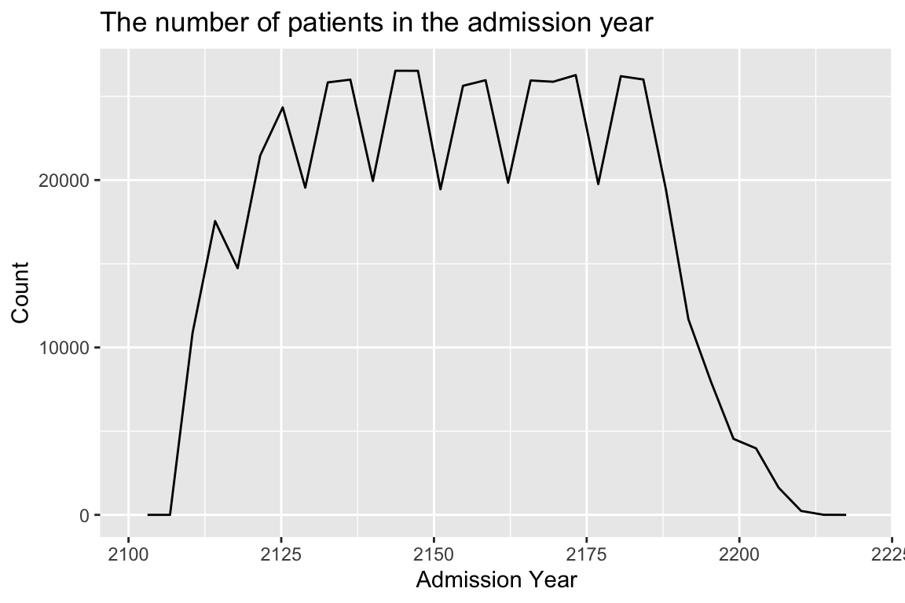
:::
-admission month: ::: {.cell layout-align=“center”}
ggplot(data=adm_time)+
geom_bar(mapping=aes(x=adm_month))+
labs(x="Admission Month",y="Count",
title="The number of patients in the each month")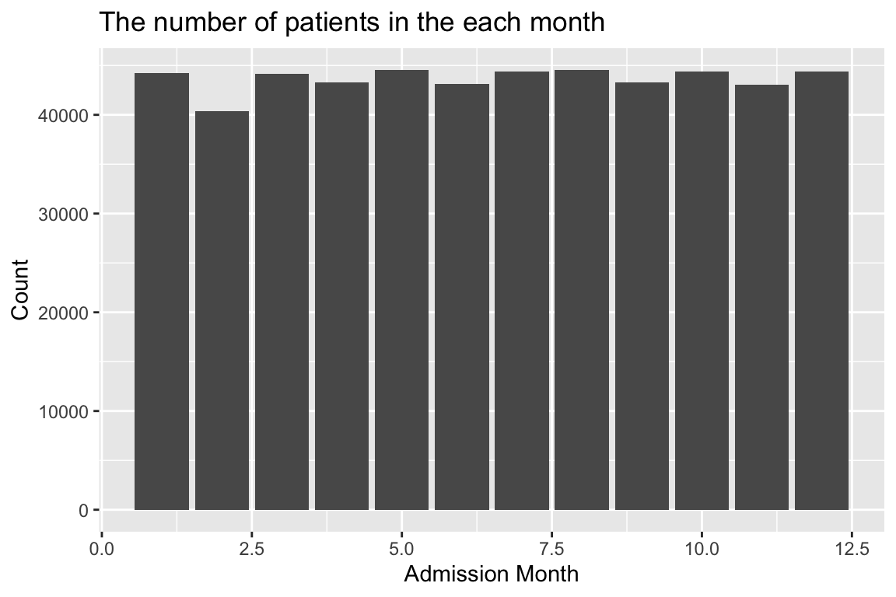
::: There is no special pattern of patients’ admission observed by month. There are constant patients every month.
-admission month day: ::: {.cell layout-align=“center”}
ggplot(data=adm_time)+
geom_bar(mapping=aes(x=admi_md))+
labs(x="Admission Month Day",y="Count",
title="The number of patients in the admission year")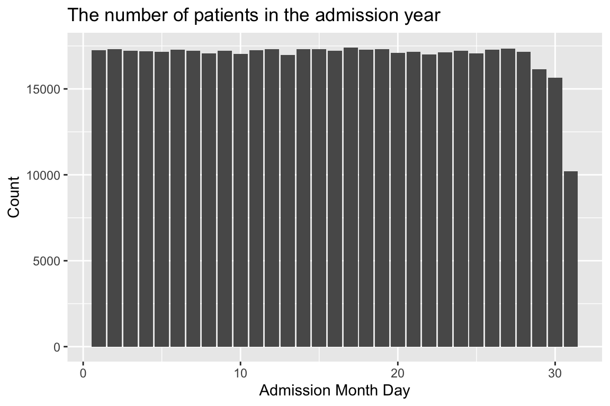
::: There is no special pattern of patients’ admission observed by month. There are constant patients every month except for the end of two days of a month.
ggplot(data=adm_time)+
geom_bar(mapping=aes(x=admi_wd)) +
labs(x="Admission Week Day",y="Count",
title="The number of patients in the each weekday")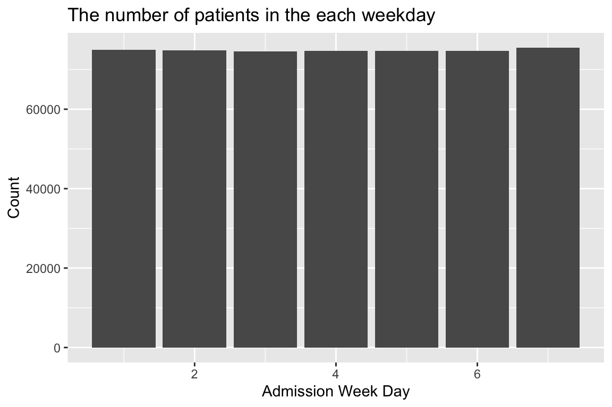
::: There is no special pattern of patients’ admission observed by day. There are constant patients every day.
ggplot(data=adm_time)+
geom_bar(mapping=aes(x=admi_h))+
labs(x="Admission Hour",y="Count",
title="The number of patients in a day")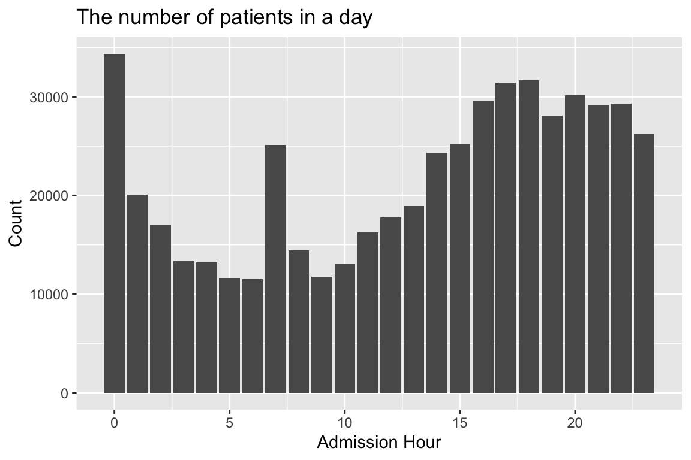
:::
We could find that about the period of parents’ admission is about 6-8 hours. From 0-24, first the number of patients will decrease then increase in the morning at 7 am, and gradually increase until 6 pm, then it will decrease.
-admission minutes: ::: {.cell layout-align=“center”}
ggplot(data=adm_time)+
geom_bar(mapping=aes(x=admi_ms))+
labs(x="Admission Minutes",y="Count",
title="The number of patients with unit minutes")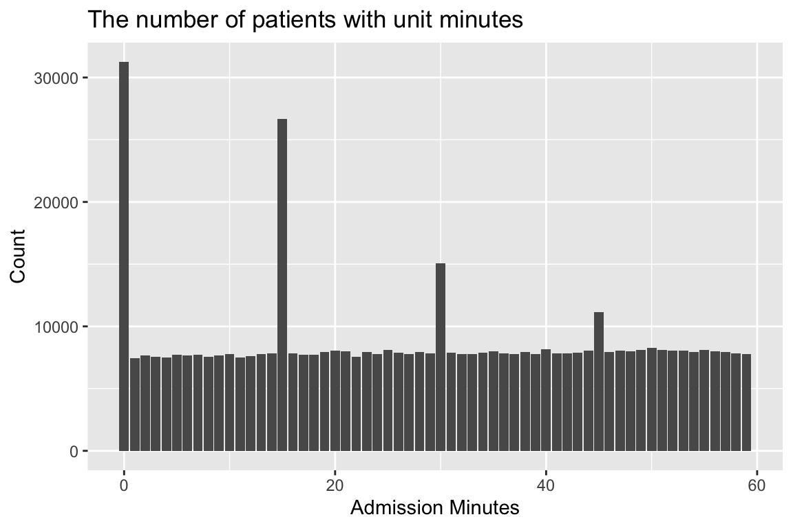
:::
Patients come every about 15 minutes. The most people is at the beginning of a hour.
-Length of hospital stay ::: {.cell layout-align=“center”}
ggplot(data=adm_time)+
geom_density(mapping=aes(x=stay))+
labs(x="Length of hospital stay",y="Count",
title="The distribution of length of hospital stay of patients")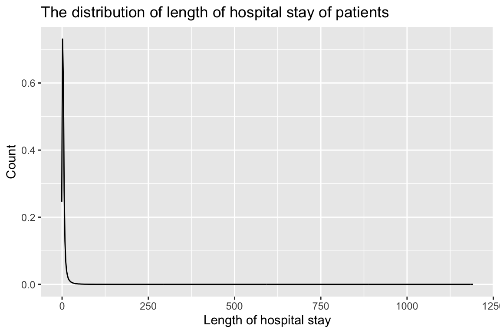
df1<-filter(adm_time,stay<quantile(stay,0.99))
df1<-filter(adm_time,stay<quantile(stay,0.99))
ggplot(data=df1)+
geom_density(mapping=aes(x=stay))+
labs(x="Length of hospital stay",y="Count",
title="The distribution of length of hospital stay of patients")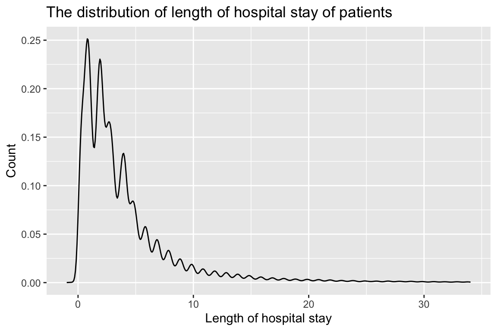
ggplot(data=df1)+
geom_boxplot(mapping=aes(x=stay))+
labs(x="Length of hospital stay",
title="The distribution of length of hospital stay of patients")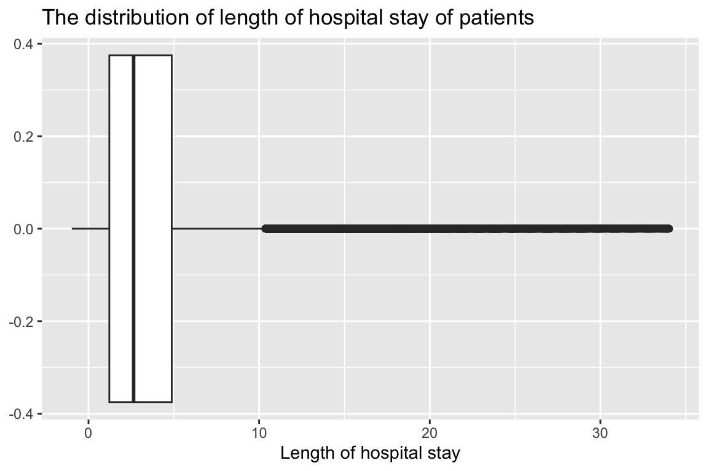
::: There are some extremely large outliers and the length of hospital stay seemed to be exponential distribution.
patients dataPatient information is available in patients.csv.gz. See https://mimic.mit.edu/docs/iv/modules/hosp/patients/ for details of each field in this file. The first 10 lines are ::: {.cell layout-align=“center”}
system(
str_c(
"zcat < ",
str_c(mimic_path, "/core/patients.csv.gz"),
" | head"
),
intern = TRUE
) [1] "subject_id,gender,anchor_age,anchor_year,anchor_year_group,dod"
[2] "10000048,F,23,2126,2008 - 2010,"
[3] "10002723,F,0,2128,2017 - 2019,"
[4] "10003939,M,0,2184,2008 - 2010,"
[5] "10004222,M,0,2161,2014 - 2016,"
[6] "10005325,F,0,2154,2011 - 2013,"
[7] "10007338,F,0,2153,2017 - 2019,"
[8] "10008101,M,0,2142,2008 - 2010,"
[9] "10009872,F,0,2168,2014 - 2016,"
[10] "10011333,F,0,2132,2014 - 2016," :::
patients.csv.gz (https://mimic.mit.edu/docs/iv/modules/hosp/patients/) as a tibble patients_tble and only keep the patients who have a match in icustays_tble (according to subject_id).patients_tble<-as_tibble(read_csv(str_c(mimic_path, "/core/patients.csv.gz")))gender and anchor_age, and explain any patterns you see.df2<-patients_tble %>%
group_by(gender,anchor_age) %>%
summarise(counts=n())
df2<-filter(df2,anchor_age!=0)
ggplot(df2) +
geom_line(mapping=aes(x=anchor_age,y=counts)) +
facet_grid(cols=vars(gender))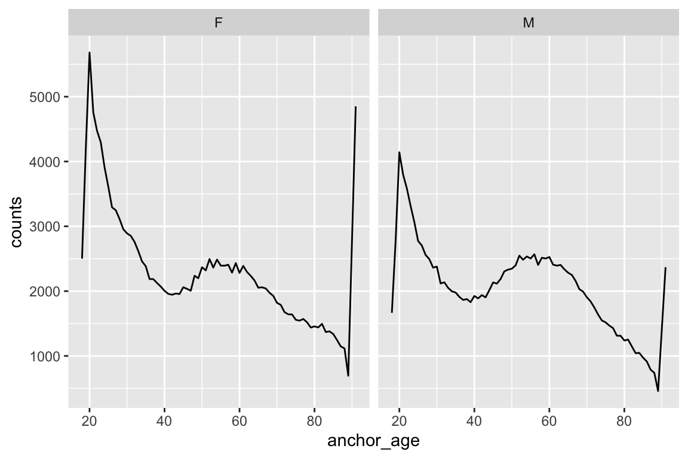
ggplot(df2)+
geom_boxplot(mapping=aes(x=anchor_age,y=counts,group=gender)) +
labs(x="Length of hospital stay",
title="The distribution of length of hospital stay of patients")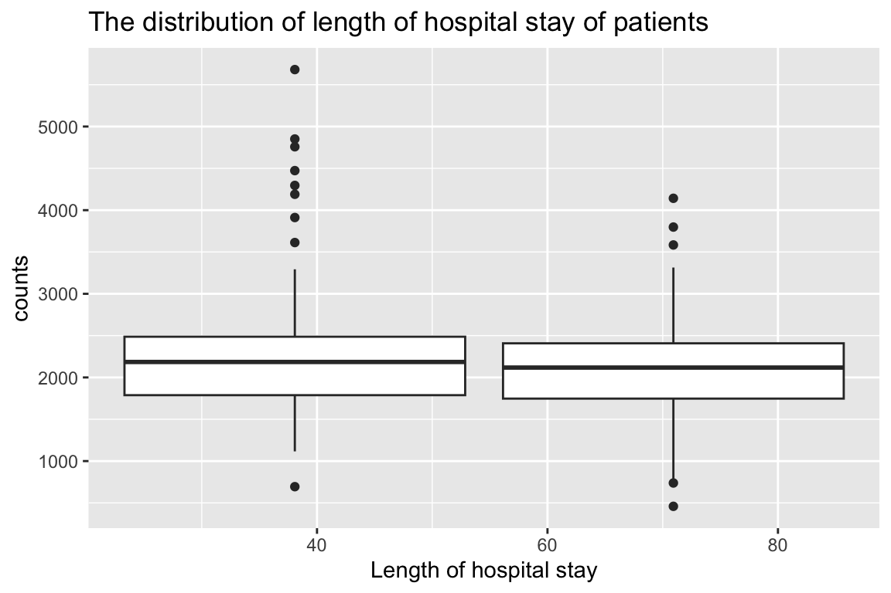
Both female and male have the same pattern of the anchor_age: both has the most people aged 20, and fewest people aged about 84, and after 20 years old, the number of patients are decreasing. However, there are overall more female patients.
labevents.csv.gz (https://mimic.mit.edu/docs/iv/modules/hosp/labevents/) contains all laboratory measurements for patients. The first 10 lines are ::: {.cell layout-align=“center”}
system(
str_c(
"zcat < ",
str_c(mimic_path, "/hosp/labevents.csv.gz"),
" | head"
),
intern = TRUE
) [1] "labevent_id,subject_id,hadm_id,specimen_id,itemid,charttime,storetime,value,valuenum,valueuom,ref_range_lower,ref_range_upper,flag,priority,comments"
[2] "670,10000048,,6448755,51484,2126-11-22 19:20:00,2126-11-22 20:07:00,150,150,mg/dL,,,,STAT,"
[3] "673,10000048,,6448755,51491,2126-11-22 19:20:00,2126-11-22 20:07:00,6.5,6.5,units,5,8,,STAT,"
[4] "675,10000048,,6448755,51498,2126-11-22 19:20:00,2126-11-22 20:07:00,1.029,1.029, ,1.001,1.035,,STAT,"
[5] "683,10000048,,82729055,50861,2126-11-22 20:45:00,2126-11-23 00:55:00,39,39,IU/L,0,40,,STAT,"
[6] "684,10000048,,82729055,50862,2126-11-22 20:45:00,2126-11-23 00:55:00,4.7,4.7,g/dL,3.4,4.8,,STAT,"
[7] "685,10000048,,82729055,50863,2126-11-22 20:45:00,2126-11-23 00:55:00,45,45,IU/L,39,117,,STAT,"
[8] "686,10000048,,82729055,50868,2126-11-22 20:45:00,2126-11-22 21:32:00,13,13,mEq/L,8,20,,STAT,"
[9] "687,10000048,,82729055,50878,2126-11-22 20:45:00,2126-11-23 00:55:00,28,28,IU/L,0,40,,STAT,"
[10] "688,10000048,,82729055,50882,2126-11-22 20:45:00,2126-11-22 21:32:00,26,26,mEq/L,22,32,,STAT," ::: d_labitems.csv.gz is the dictionary of lab measurements. ::: {.cell layout-align=“center”}
system(
str_c(
"zcat < ",
str_c(mimic_path, "/hosp/d_labitems.csv.gz"),
" | head"
),
intern = TRUE
) [1] "itemid,label,fluid,category,loinc_code"
[2] "51905, ,Other Body Fluid,Chemistry,"
[3] "51532,11-Deoxycorticosterone,Blood,Chemistry,"
[4] "51957,17-Hydroxycorticosteroids,Urine,Chemistry,"
[5] "51958,\"17-Ketosteroids, Urine\",Urine,Chemistry,"
[6] "52068,24 Hr,Blood,Hematology,"
[7] "51066,24 hr Calcium,Urine,Chemistry,"
[8] "51067,24 hr Creatinine,Urine,Chemistry,"
[9] "51068,24 hr Protein,Urine,Chemistry,"
[10] "50853,25-OH Vitamin D,Blood,Chemistry," :::
labevents.csv.gz.system(
str_c(
"zcat < ",
str_c(mimic_path, "/hosp/labevents.csv.gz"),
" | wc -l"
),
)122103667 Lines. (wc -l will contains a built-in switch, -n, to remove newline)
We are interested in the lab measurements of creatinine (50912), potassium (50971), sodium (50983), chloride (50902), bicarbonate (50882), hematocrit (51221), white blood cell count (51301), and glucose (50931). Retrieve a subset of labevents.csv.gz only containing these items for the patients in icustays_tble as a tibble labevents_tble.
Hint: labevents.csv.gz is a data file too big to be read in by the read_csv function in its default setting. Utilize the col_select option in the read_csv function to reduce the memory burden. It took my computer 5-10 minutes to ingest this file. If your computer really has trouble importing labevents.csv.gz, you can import from the reduced data file labevents_filtered_itemid.csv.gz.
icustays_tble0<-as_tibble(read_csv(str_c(mimic_path,"/icu/icustays.csv.gz")))
labevents_tble0<-as_tibble(read_csv(str_c(mimic_path,"/hosp/labevents_filtered_itemid.csv.gz")),lazy=T,delim=',')labevents_tble <-
semi_join(labevents_tble0,icustays_tble0,by="subject_id") %>%
filter(itemid %in% c(50912,50971,50983,50902,50882,51221,51301,50931)) %>%
print(Inf)# A tibble: 13,926,853 × 4
subject_id itemid charttime valuenum
<dbl> <dbl> <dttm> <dbl>
1 10003700 50882 2162-11-15 17:00:00 27
2 10003700 50902 2162-11-15 17:00:00 103
3 10003700 50912 2162-11-15 17:00:00 1
4 10003700 50931 2162-11-15 17:00:00 93
5 10003700 50971 2162-11-15 17:00:00 4.1
6 10003700 50983 2162-11-15 17:00:00 141
7 10003700 51221 2162-11-15 17:00:00 40
8 10003700 51301 2162-11-15 17:00:00 6.7
9 10003700 51221 2165-04-24 03:40:00 41
10 10003700 51301 2165-04-24 03:40:00 5.8
# … with 13,926,843 more rowslabevents_tble to the first lab measurement during the ICU stay. ::: {.cell layout-align=“center”}labevents_tble1<-labevents_tble %>%
left_join(select(icustays_tble0, subject_id, intime, outtime),by="subject_id") %>%
filter(intime<=charttime&charttime<=outtime) %>%
group_by(subject_id,itemid) %>%
arrange(charttime,by_group=T) %>%
slice_head(n=1) %>%
# important to take out before pivot_wider o/w multiple rows.
ungroup() %>%
select(-intime,-outtime,-charttime) %>%
pivot_wider(names_from = itemid, values_from = valuenum) %>%
rename('bicarbonate'='50882','creatinine'='50912','potassium'='50971',
'sodium'='50983','chloride'='50902','hematocrit'='51221','n_wb_cell'='51301',
'glucose'='50931') %>%
print(width=Inf)# A tibble: 51,892 × 9
subject_id bicarbonate chloride creatinine glucose potassium sodium
<dbl> <dbl> <dbl> <dbl> <dbl> <dbl> <dbl>
1 10000032 21 102 0.5 115 4.7 132
2 10001217 23 104 0.4 113 3.6 138
3 10001725 24 106 0.8 146 3.9 140
4 10001884 33 96 1.1 148 4 136
5 10002013 23 109 1.1 98 4 140
6 10002155 25 106 0.9 95 4.5 139
7 10002223 26 102 0.8 88 3.9 138
8 10002348 23 107 0.8 127 4.8 142
9 10002428 20 98 0.8 99 3.9 129
10 10002430 22 105 2.2 128 3.8 144
hematocrit n_wb_cell
<dbl> <dbl>
1 NA NA
2 33.6 19
3 39.1 17
4 36 18.4
5 28.6 18.2
6 37.9 5.5
7 32.5 10.1
8 39.3 4.3
9 28.7 22.4
10 36.6 10.3
# … with 51,882 more rows:::
summary(labevents_tble1[,-1]) bicarbonate chloride creatinine glucose
Min. : 2.00 Min. : 58.0 Min. : 0.000 Min. : 7.0
1st Qu.:21.00 1st Qu.:101.0 1st Qu.: 0.700 1st Qu.: 103.0
Median :23.00 Median :105.0 Median : 0.900 Median : 124.0
Mean :22.97 Mean :104.5 Mean : 1.312 Mean : 141.4
3rd Qu.:25.00 3rd Qu.:108.0 3rd Qu.: 1.300 3rd Qu.: 156.0
Max. :49.00 Max. :153.0 Max. :36.900 Max. :2440.0
NA's :226 NA's :191 NA's :205 NA's :287
potassium sodium hematocrit n_wb_cell
Min. : 0.800 Min. : 92.0 Min. : 4.30 Min. : 0.00
1st Qu.: 3.700 1st Qu.:136.0 1st Qu.:28.10 1st Qu.: 7.60
Median : 4.100 Median :139.0 Median :32.60 Median : 10.50
Mean : 4.178 Mean :138.5 Mean :32.74 Mean : 12.07
3rd Qu.: 4.500 3rd Qu.:141.0 3rd Qu.:37.30 3rd Qu.: 14.50
Max. :13.000 Max. :180.0 Max. :68.60 Max. :572.50
NA's :217 NA's :184 NA's :427 NA's :522 :::
labevents_tble1[,-1] %>%
pivot_longer(everything()) %>%
group_by(name) %>%
filter(value>quantile(value,0.025,na.rm=TRUE) & value<quantile(value,0.975,na.rm=TRUE)) %>% #delete the outliers
ungroup() %>%
ggplot() +
geom_boxplot(mapping=aes(y=value)) +
facet_wrap(vars(name),scales = 'free_y',nrow=3,ncol=3) 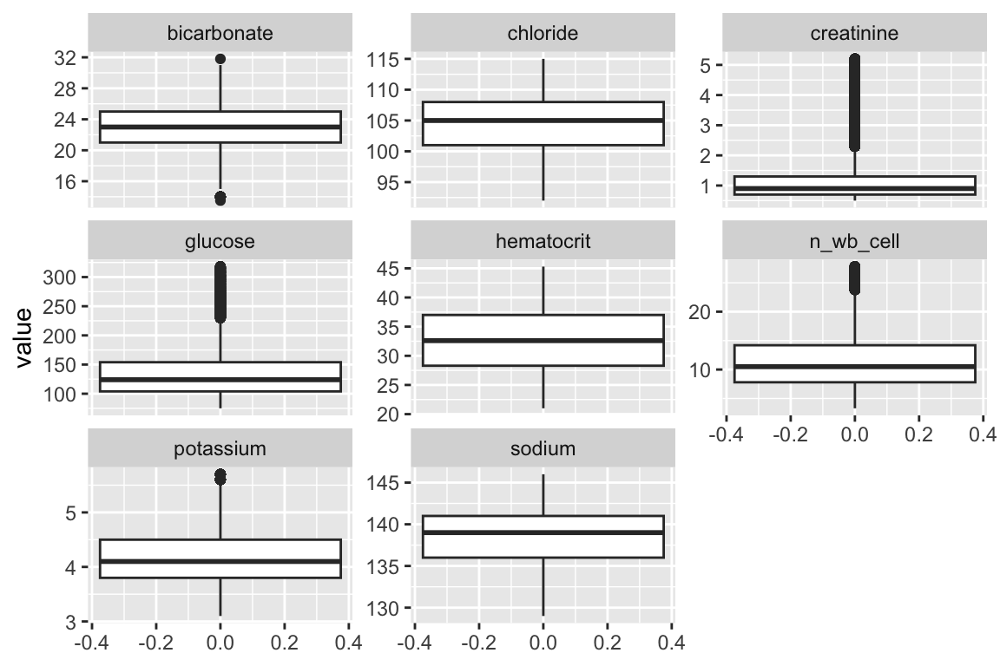
labevents_tble1[,-1] %>%
pivot_longer(everything()) %>%
group_by(name) %>%
filter(value>quantile(value,0.025,na.rm=TRUE) & value<quantile(value,0.975,na.rm=TRUE)) %>%
ungroup() %>%
ggplot() +
geom_histogram(mapping=aes(x=value)) +
facet_wrap(vars(name),scales = 'free',nrow=3,ncol=3)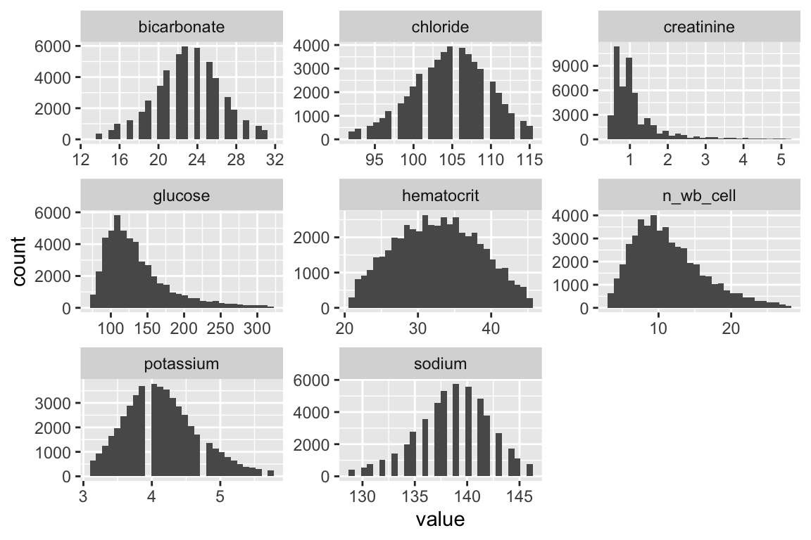
Due to the influence of outliers, the boxplots seems to be weird, so, we need to filter some outliers. From the boxplots and histograms, we could know that the distribution of glucose, number of white blood cell and creatinine have a slight right skewness. hematocrit is pretty symmetric and comforms to normal distribution. Bicarbonate and chloride sodium and potassium have some gaps for their values.
chartevents.csv.gz (https://mimic.mit.edu/docs/iv/modules/icu/chartevents/) contains all the charted data available for a patient. During their ICU stay, the primary repository of a patient’s information is their electronic chart. The itemid variable indicates a single measurement type in the database. The value variable is the value measured for itemid. The first 10 lines of chartevents.csv.gz are ::: {.cell layout-align=“center”}
system(
str_c(
"zcat < ",
str_c(mimic_path, "/icu/chartevents.csv.gz"),
" | head"),
intern = TRUE
) [1] "subject_id,hadm_id,stay_id,charttime,storetime,itemid,value,valuenum,valueuom,warning"
[2] "10003700,28623837,30600691,2165-04-24 05:10:00,2165-04-24 05:11:00,228236,0,0,,0"
[3] "10003700,28623837,30600691,2165-04-24 05:12:00,2165-04-24 05:14:00,225067,0,0,,0"
[4] "10003700,28623837,30600691,2165-04-24 05:12:00,2165-04-24 05:14:00,225070,1,1,,0"
[5] "10003700,28623837,30600691,2165-04-24 05:12:00,2165-04-24 05:14:00,225076,1,1,,0"
[6] "10003700,28623837,30600691,2165-04-24 05:12:00,2165-04-24 05:14:00,225078,1,1,,0"
[7] "10003700,28623837,30600691,2165-04-24 05:12:00,2165-04-24 05:14:00,225086,1,1,,0"
[8] "10003700,28623837,30600691,2165-04-24 05:12:00,2165-04-24 05:14:00,225091,1,1,,0"
[9] "10003700,28623837,30600691,2165-04-24 05:12:00,2165-04-24 05:14:00,225103,1,1,,0"
[10] "10003700,28623837,30600691,2165-04-24 05:12:00,2165-04-24 05:14:00,225106,1,1,,0" :::
d_items.csv.gz (https://mimic.mit.edu/docs/iv/modules/icu/d_items/) is the dictionary for the itemid in chartevents.csv.gz. ::: {.cell layout-align=“center”}
system(
str_c(
"zcat < ",
str_c(mimic_path, "/icu/d_items.csv.gz"),
" | head"),
intern = TRUE
) [1] "itemid,label,abbreviation,linksto,category,unitname,param_type,lownormalvalue,highnormalvalue"
[2] "220003,ICU Admission date,ICU Admission date,datetimeevents,ADT,,Date and time,,"
[3] "220045,Heart Rate,HR,chartevents,Routine Vital Signs,bpm,Numeric,,"
[4] "220046,Heart rate Alarm - High,HR Alarm - High,chartevents,Alarms,bpm,Numeric,,"
[5] "220047,Heart Rate Alarm - Low,HR Alarm - Low,chartevents,Alarms,bpm,Numeric,,"
[6] "220048,Heart Rhythm,Heart Rhythm,chartevents,Routine Vital Signs,,Text,,"
[7] "220050,Arterial Blood Pressure systolic,ABPs,chartevents,Routine Vital Signs,mmHg,Numeric,90,140"
[8] "220051,Arterial Blood Pressure diastolic,ABPd,chartevents,Routine Vital Signs,mmHg,Numeric,60,90"
[9] "220052,Arterial Blood Pressure mean,ABPm,chartevents,Routine Vital Signs,mmHg,Numeric,,"
[10] "220056,Arterial Blood Pressure Alarm - Low,ABP Alarm - Low,chartevents,Alarms,mmHg,Numeric,," :::
We are interested in the vitals for ICU patients: heart rate (220045), mean non-invasive blood pressure (220181), systolic non-invasive blood pressure (220179), body temperature in Fahrenheit (223761), and respiratory rate (220210). Retrieve a subset of chartevents.csv.gz only containing these items for the patients in icustays_tble as a tibble chartevents_tble.
Hint: chartevents.csv.gz is a data file too big to be read in by the read_csv function in its default setting. Utilize the col_select option in the read_csv function to reduce the memory burden. It took my computer >15 minutes to ingest this file. If your computer really has trouble importing chartevents.csv.gz, you can import from the reduced data file chartevents_filtered_itemid.csv.gz.
chartevents_tble0<-
as_tibble(read_csv(str_c(mimic_path, "/icu/chartevents_filtered_itemid.csv.gz")))chartevents_tble<-
filter(chartevents_tble0,itemid %in% c(220045,220181,220179,223761,220210)) %>%
semi_join(icustays_tble,by='subject_id') %>%
print(width=Inf)# A tibble: 23,679,058 × 6
subject_id hadm_id stay_id charttime itemid valuenum
<dbl> <dbl> <dbl> <dttm> <dbl> <dbl>
1 10003700 28623837 30600691 2165-04-24 05:28:00 220179 152
2 10003700 28623837 30600691 2165-04-24 05:28:00 220181 110
3 10003700 28623837 30600691 2165-04-24 05:30:00 220045 65
4 10003700 28623837 30600691 2165-04-24 05:30:00 220210 14
5 10003700 28623837 30600691 2165-04-24 05:38:00 223761 97.6
6 10003700 28623837 30600691 2165-04-24 06:00:00 220045 56
7 10003700 28623837 30600691 2165-04-24 06:00:00 220179 126
8 10003700 28623837 30600691 2165-04-24 06:00:00 220181 88
9 10003700 28623837 30600691 2165-04-24 06:00:00 220210 14
10 10003700 28623837 30600691 2165-04-24 06:09:00 220045 55
# … with 23,679,048 more rowsheart rate (220045), mean non-invasive blood pressure (220181), systolic non-invasive blood pressure (220179), body temperature in Fahrenheit (223761), and respiratory rate (220210) 2. Further restrict chartevents_tble to the first vital measurement during the ICU stay.
chartevents_tble1 <-
chartevents_tble %>%
left_join(select(icustays_tble, subject_id, intime, outtime),by="subject_id") %>%
filter(intime<=charttime & charttime<=outtime) %>%
group_by(subject_id,itemid) %>%
arrange(charttime,by_group=T) %>%
slice_head(n=1) %>%
# important to take out before pivot_wider o/w multiple rows.
ungroup() %>%
select(-intime,-outtime,-charttime,-hadm_id,-stay_id) %>%
pivot_wider(names_from = itemid, values_from = valuenum) %>%
rename('heart_rate'='220045','ni_blood_pressure'='220181','sni_blood_pressure'='220179','body_temp'='223761','respiratory_rate'='220210') %>%
print(width=Inf)# A tibble: 53,136 × 6
subject_id heart_rate sni_blood_pressure ni_blood_pressure respiratory_rate
<dbl> <dbl> <dbl> <dbl> <dbl>
1 10000032 91 84 56 24
2 10000980 77 150 92 23
3 10001217 86 151 104 18
4 10001725 55 73 59 19
5 10001884 38 180 46 10
6 10002013 80 104 77 14
7 10002155 68 126 78 18
8 10002223 100 123 80 29
9 10002348 72 129 85 14
10 10002428 124 87 53 25
body_temp
<dbl>
1 98.7
2 98
3 98.5
4 97.7
5 98.1
6 97.2
7 95.9
8 98.6
9 97.9
10 103.
# … with 53,126 more rowssummary(chartevents_tble1[,-1]) heart_rate sni_blood_pressure ni_blood_pressure respiratory_rate
Min. : 0.00 Min. : 0.0 Min. : 0.00 Min. : 0.00
1st Qu.: 74.00 1st Qu.: 106.0 1st Qu.: 70.00 1st Qu.: 15.00
Median : 85.00 Median : 122.0 Median : 81.00 Median : 18.00
Mean : 87.47 Mean : 123.8 Mean : 87.42 Mean : 18.69
3rd Qu.: 99.00 3rd Qu.: 139.0 3rd Qu.: 93.00 3rd Qu.: 22.00
Max. :941.00 Max. :12262.0 Max. :140119.00 Max. :180.00
NA's :1 NA's :669 NA's :690 NA's :48
body_temp
Min. : 0.00
1st Qu.: 97.60
Median : 98.10
Mean : 98.03
3rd Qu.: 98.70
Max. :106.00
NA's :940 chartevents_tble1[,-1] %>%
pivot_longer(everything()) %>%
group_by(name) %>%
filter(value>quantile(value,0.025,na.rm=TRUE) & value<quantile(value,0.975,na.rm=TRUE)) %>% #delete the outliers
ungroup() %>%
ggplot() +
geom_boxplot(mapping=aes(y=value)) +
facet_wrap(vars(name),scales = 'free_y',ncol=3) 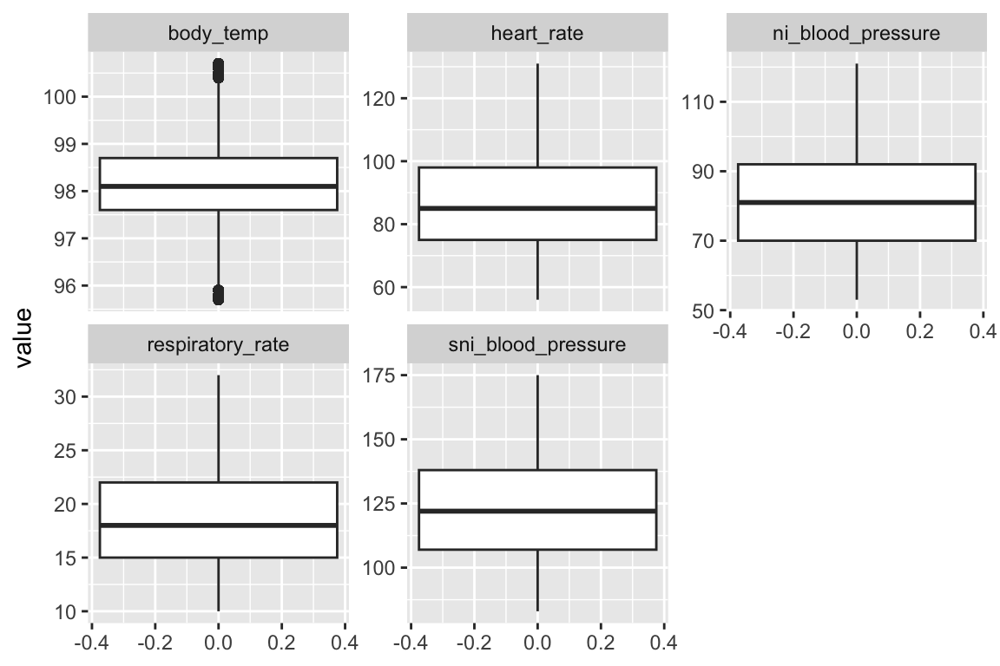
chartevents_tble1[,-1] %>%
pivot_longer(everything()) %>%
group_by(name) %>%
filter(value>quantile(value,0.025,na.rm=TRUE) & value<quantile(value,0.975,na.rm=TRUE)) %>%
ungroup() %>%
ggplot() +
geom_histogram(mapping=aes(x=value)) +
facet_wrap(vars(name),scales = 'free',nrow=3,ncol=3)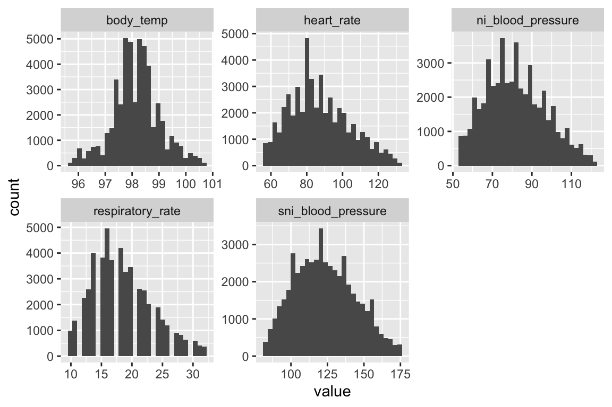
Due to the influence of outliers, the boxplots seems to be weird, so, we need to filter some outliers. From the boxplots and histograms, we could know that the distribution of heart rate,respiratory rate and mean non-invasive blood pressure have a slight right skewness. body temperature in Fahrenheit is pretty symmetric and comforms to normal distribution. respiratory rate has some gaps for their values.
Let us create a tibble mimic_icu_cohort for all ICU stays, where rows are the first ICU stay of each unique adult (age at admission > 18) and columns contain at least following variables
icustays.csv.gzadmission.csv.gzpatients.csv.gzthirty_day_mort whether the patient died within 30 days of hospital admission (30 day mortality)admissions_tble1<-semi_join(admissions_tble,icustays_tble,by=c('subject_id','hadm_id')) #keep only the first icu stay of each patient
patients_tble1<-semi_join(patients_tble,icustays_tble,by='subject_id') #keep only the first icu stay of each patient
#First combine all of 5 tables and then select age>18, then create the thirty_day_mort variables
mimic_icu_cohort <-
left_join(icustays_tble,admissions_tble1,by="subject_id") %>%
left_join(patients_tble,by="subject_id") %>%
left_join(labevents_tble1,by='subject_id') %>%
left_join(chartevents_tble1,by='subject_id') %>%
mutate(age=year(admittime)-anchor_year+anchor_age) %>%
filter(age>18) %>%
mutate(thirty_day_mort=if_else(is.na(deathtime),'No', if_else(as.Date(deathtime)-as.Date(admittime)<=30,"Yes","No"))) %>%
#Yes -> die No->alive
print(width=Inf)# A tibble: 53,065 × 42
subject_id hadm_id.x stay_id
<dbl> <dbl> <dbl>
1 10000032 29079034 39553978
2 10000980 26913865 39765666
3 10001217 24597018 37067082
4 10001725 25563031 31205490
5 10001884 26184834 37510196
6 10002013 23581541 39060235
7 10002155 23822395 33685454
8 10002223 22494570 39638202
9 10002348 22725460 32610785
10 10002428 28662225 33987268
first_careunit
<chr>
1 Medical Intensive Care Unit (MICU)
2 Medical Intensive Care Unit (MICU)
3 Surgical Intensive Care Unit (SICU)
4 Medical/Surgical Intensive Care Unit (MICU/SICU)
5 Medical Intensive Care Unit (MICU)
6 Cardiac Vascular Intensive Care Unit (CVICU)
7 Coronary Care Unit (CCU)
8 Trauma SICU (TSICU)
9 Neuro Intermediate
10 Medical Intensive Care Unit (MICU)
last_careunit intime
<chr> <dttm>
1 Medical Intensive Care Unit (MICU) 2180-07-23 14:00:00
2 Medical Intensive Care Unit (MICU) 2189-06-27 08:42:00
3 Surgical Intensive Care Unit (SICU) 2157-11-20 19:18:02
4 Medical/Surgical Intensive Care Unit (MICU/SICU) 2110-04-11 15:52:22
5 Medical Intensive Care Unit (MICU) 2131-01-11 04:20:05
6 Cardiac Vascular Intensive Care Unit (CVICU) 2160-05-18 10:00:53
7 Coronary Care Unit (CCU) 2129-08-04 12:45:00
8 Trauma SICU (TSICU) 2158-01-15 08:01:49
9 Neuro Intermediate 2112-11-30 23:24:00
10 Medical Intensive Care Unit (MICU) 2156-04-12 16:24:18
outtime los hadm_id.y admittime dischtime
<dttm> <dbl> <dbl> <dttm> <dttm>
1 2180-07-23 23:50:47 0.410 29079034 2180-07-23 12:35:00 2180-07-25 17:55:00
2 2189-06-27 20:38:27 0.498 26913865 2189-06-27 07:38:00 2189-07-03 03:00:00
3 2157-11-21 22:08:00 1.12 24597018 2157-11-18 22:56:00 2157-11-25 18:00:00
4 2110-04-12 23:59:56 1.34 25563031 2110-04-11 15:08:00 2110-04-14 15:00:00
5 2131-01-20 08:27:30 9.17 26184834 2131-01-07 20:39:00 2131-01-20 05:15:00
6 2160-05-19 17:33:33 1.31 23581541 2160-05-18 07:45:00 2160-05-23 13:30:00
7 2129-08-10 17:02:38 6.18 23822395 2129-08-04 12:44:00 2129-08-18 16:53:00
8 2158-01-16 15:19:24 1.30 22494570 2158-01-15 08:00:00 2158-01-20 19:29:00
9 2112-12-10 18:25:13 9.79 22725460 2112-11-30 22:22:00 2112-12-10 17:56:00
10 2156-04-17 15:57:08 4.98 28662225 2156-04-12 14:16:00 2156-04-29 16:26:00
deathtime admission_type admission_location
<dttm> <chr> <chr>
1 NA EW EMER. EMERGENCY ROOM
2 NA EW EMER. EMERGENCY ROOM
3 NA EW EMER. EMERGENCY ROOM
4 NA EW EMER. PACU
5 2131-01-20 05:15:00 OBSERVATION ADMIT EMERGENCY ROOM
6 NA SURGICAL SAME DAY ADMISSION PHYSICIAN REFERRAL
7 NA EW EMER. PROCEDURE SITE
8 NA EW EMER. EMERGENCY ROOM
9 NA OBSERVATION ADMIT TRANSFER FROM HOSPITAL
10 NA EW EMER. EMERGENCY ROOM
discharge_location insurance language marital_status
<chr> <chr> <chr> <chr>
1 HOME Medicaid ENGLISH WIDOWED
2 HOME HEALTH CARE Medicare ENGLISH MARRIED
3 HOME HEALTH CARE Other ? MARRIED
4 HOME Other ENGLISH MARRIED
5 DIED Medicare ENGLISH MARRIED
6 HOME HEALTH CARE Medicare ENGLISH SINGLE
7 CHRONIC/LONG TERM ACUTE CARE Other ENGLISH MARRIED
8 HOME Other ENGLISH <NA>
9 HOME HEALTH CARE Medicare ENGLISH SINGLE
10 SKILLED NURSING FACILITY Medicare ENGLISH WIDOWED
ethnicity edregtime edouttime
<chr> <dttm> <dttm>
1 WHITE 2180-07-23 05:54:00 2180-07-23 14:00:00
2 BLACK/AFRICAN AMERICAN 2189-06-27 06:25:00 2189-06-27 08:42:00
3 WHITE 2157-11-18 17:38:00 2157-11-19 01:24:00
4 WHITE NA NA
5 BLACK/AFRICAN AMERICAN 2131-01-07 13:36:00 2131-01-07 22:13:00
6 OTHER NA NA
7 WHITE 2129-08-04 11:00:00 2129-08-04 12:35:00
8 UNABLE TO OBTAIN 2158-01-15 06:49:00 2158-01-15 07:36:00
9 WHITE 2112-11-30 15:08:00 2112-11-30 23:24:00
10 WHITE 2156-04-12 09:56:00 2156-04-12 17:11:00
hospital_expire_flag gender anchor_age anchor_year anchor_year_group
<dbl> <chr> <dbl> <dbl> <chr>
1 0 F 52 2180 2014 - 2016
2 0 F 73 2186 2008 - 2010
3 0 F 55 2157 2011 - 2013
4 0 F 46 2110 2011 - 2013
5 1 F 68 2122 2008 - 2010
6 0 F 53 2156 2008 - 2010
7 0 F 80 2128 2008 - 2010
8 0 M 21 2158 2008 - 2010
9 0 F 77 2112 2017 - 2019
10 0 F 80 2155 2011 - 2013
dod bicarbonate chloride creatinine glucose potassium sodium
<date> <dbl> <dbl> <dbl> <dbl> <dbl> <dbl>
1 NA 21 102 0.5 115 4.7 132
2 NA NA NA NA NA NA NA
3 NA 23 104 0.4 113 3.6 138
4 NA 24 106 0.8 146 3.9 140
5 2131-01-20 33 96 1.1 148 4 136
6 NA 23 109 1.1 98 4 140
7 2131-03-10 25 106 0.9 95 4.5 139
8 NA 26 102 0.8 88 3.9 138
9 NA 23 107 0.8 127 4.8 142
10 NA 20 98 0.8 99 3.9 129
hematocrit n_wb_cell heart_rate sni_blood_pressure ni_blood_pressure
<dbl> <dbl> <dbl> <dbl> <dbl>
1 NA NA 91 84 56
2 NA NA 77 150 92
3 33.6 19 86 151 104
4 39.1 17 55 73 59
5 36 18.4 38 180 46
6 28.6 18.2 80 104 77
7 37.9 5.5 68 126 78
8 32.5 10.1 100 123 80
9 39.3 4.3 72 129 85
10 28.7 22.4 124 87 53
respiratory_rate body_temp age thirty_day_mort
<dbl> <dbl> <dbl> <chr>
1 24 98.7 52 No
2 23 98 76 No
3 18 98.5 55 No
4 19 97.7 46 No
5 10 98.1 77 Yes
6 14 97.2 57 No
7 18 95.9 81 No
8 29 98.6 21 No
9 14 97.9 77 No
10 25 103. 81 No
# … with 53,055 more rowsSummarize following information using appropriate numerics or graphs.
thirty_day_mort vs demographic variables ::: {.cell layout-align=“center”}#categorical data vs categorical data
categ<-c('thirty_day_mort','gender','language','insurance','marital_status')
op=par(mfrow=c(2,2))
for(i in 2:5){
a<-table(mimic_icu_cohort[[categ[1]]],mimic_icu_cohort[[categ[i]]])
print(a)
barplot(a,cex.axis=1,cex.names=0.5,)
}
F M
No 20901 26952
Yes 2413 2799
? ENGLISH
No 4730 43123
Yes 560 4652
Medicaid Medicare Other
No 3532 20009 24312
Yes 297 2767 2148
DIVORCED MARRIED SINGLE WIDOWED
No 3399 22062 13170 5629
Yes 296 2050 1001 841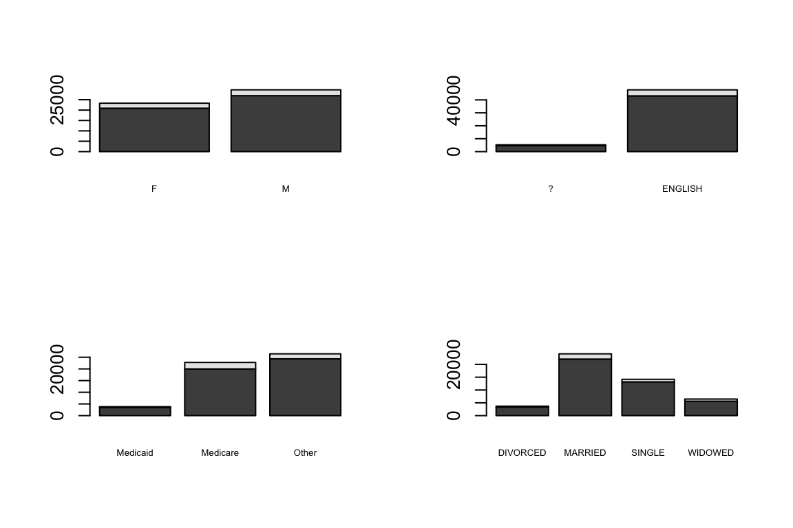
par=op::: 1. Gender: Gender has no association with the mortality rate during 30 days in ICU. 2. Language:Most people (about 90%) speak English. Language has no association with the mortality rate during 30 days in ICU. 3. Insurance: For people with medicare, the death rate is the highest during 30 days in ICU. 4. Martial status: For people who married, the death rate is the highest during 30 days in ICU, and then is the widowed people. Single people tend to the lowest death rate.
mimic_icu_cohort %>%
ggplot() +
geom_bar(mapping=aes(x=thirty_day_mort,fill=ethnicity),position = 'fill')+
labs(title='30 days mortality vs ethnicity')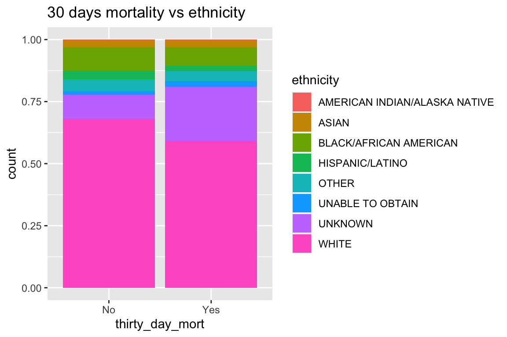
thirty_day_mort vs first lab measurements ::: {.cell layout-align=“center”}lab_measure<-
select(mimic_icu_cohort,c('bicarbonate','creatinine','potassium','sodium',
'chloride','hematocrit',"n_wb_cell",'glucose',
'thirty_day_mort')) %>%
pivot_longer(cols=bicarbonate:glucose) %>%
group_by(name) %>%
filter(value<quantile(value,0.975,na.rm=T) &
value>quantile(value,0.025,na.rm=T)) %>%
ungroup()
# Summary table
lab_measure %>%
group_by(name,thirty_day_mort) %>%
summarise(
mean=mean(value),
min=min(value),
max=max(value),
median=median(value),
q25=quantile(value,0.25),
q75=quantile(value,0.75),
variance=var(value)
) %>%
print(width=Inf)# A tibble: 16 × 9
# Groups: name [8]
name thirty_day_mort mean min max median q25 q75 variance
<chr> <chr> <dbl> <dbl> <dbl> <dbl> <dbl> <dbl> <dbl>
1 bicarbonate No 23.1 13.5 31 23 21 25 11.2
2 bicarbonate Yes 21.6 14 31.8 21 18 24 16.4
3 chloride No 105. 92 115 105 102 108 23.7
4 chloride Yes 104. 92 115 104 100 108 30.9
5 creatinine No 1.11 0.5 5.2 0.9 0.7 1.2 0.484
6 creatinine Yes 1.61 0.5 5.2 1.3 0.9 2 1.03
7 glucose No 134. 75 318 123 104 151 1909.
8 glucose Yes 151. 75 318 139 110 180 2915.
9 hematocrit No 32.7 21 45.3 32.7 28.4 37 32.5
10 hematocrit Yes 32.2 21 45.3 32 27.7 36.5 33.7
11 n_wb_cell No 11.3 3.3 27.8 10.4 7.7 14 23.3
12 n_wb_cell Yes 13.1 3.3 27.8 12.4 8.8 16.8 31.3
13 potassium No 4.14 3.1 5.7 4.1 3.8 4.5 0.281
14 potassium Yes 4.26 3.1 5.7 4.2 3.8 4.7 0.399
15 sodium No 139. 129 146 139 136 141 11.8
16 sodium Yes 138. 129 146 138 135 141 17.4 :::
#Summary plot
ggplot(lab_measure) +
geom_boxplot(aes(x=thirty_day_mort,y=value)) +
facet_wrap(facets=vars(name),scales = 'free' )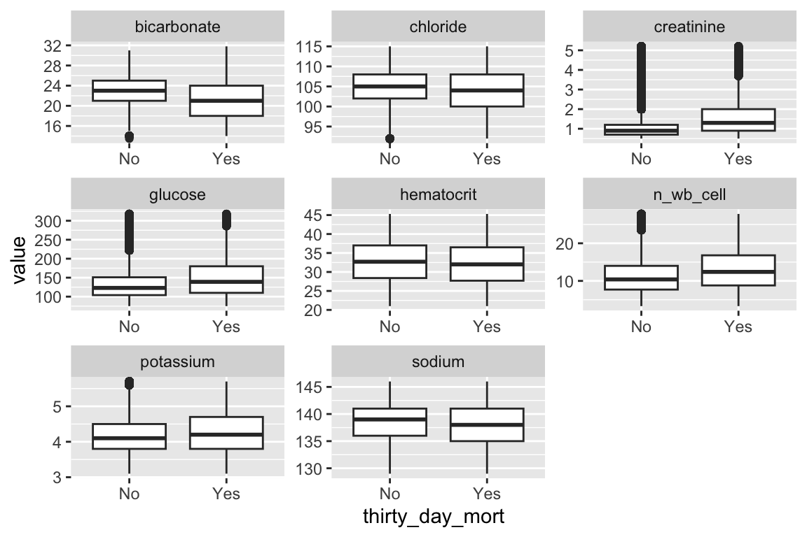
From the graph, we could know that there might have no association between hematocrit and death rate during 30 days after admission of ICU. But for sodium and chloride and bicarbonate, we could observe that the mean and range of those people died during 30 days after admission of ICU are lower than those of people alive during 30 days. On the contrary, for potassium, number of white blood cell, glucose and creatinite, the mean and range of those people died during 30 days after admission of ICU are higher than those of people alive during 30 days.
thirty_day_mort vs first vital measurements ::: {.cell layout-align=“center”}vital_measure <-
select(mimic_icu_cohort,c('heart_rate','ni_blood_pressure',
'sni_blood_pressure','body_temp',
'respiratory_rate','thirty_day_mort')) %>%
pivot_longer(cols=heart_rate:respiratory_rate) %>%
group_by(name) %>%
filter(value<quantile(value,0.975,na.rm=T) &
value>quantile(value,0.025,na.rm=T)) %>%
ungroup()
# Summary table
lab_measure %>%
group_by(name,thirty_day_mort) %>%
summarise(
mean=mean(value),
min=min(value),
max=max(value),
median=median(value),
q25=quantile(value,0.25),
q75=quantile(value,0.75),
variance=var(value)
) %>%
print(width=Inf)# A tibble: 16 × 9
# Groups: name [8]
name thirty_day_mort mean min max median q25 q75 variance
<chr> <chr> <dbl> <dbl> <dbl> <dbl> <dbl> <dbl> <dbl>
1 bicarbonate No 23.1 13.5 31 23 21 25 11.2
2 bicarbonate Yes 21.6 14 31.8 21 18 24 16.4
3 chloride No 105. 92 115 105 102 108 23.7
4 chloride Yes 104. 92 115 104 100 108 30.9
5 creatinine No 1.11 0.5 5.2 0.9 0.7 1.2 0.484
6 creatinine Yes 1.61 0.5 5.2 1.3 0.9 2 1.03
7 glucose No 134. 75 318 123 104 151 1909.
8 glucose Yes 151. 75 318 139 110 180 2915.
9 hematocrit No 32.7 21 45.3 32.7 28.4 37 32.5
10 hematocrit Yes 32.2 21 45.3 32 27.7 36.5 33.7
11 n_wb_cell No 11.3 3.3 27.8 10.4 7.7 14 23.3
12 n_wb_cell Yes 13.1 3.3 27.8 12.4 8.8 16.8 31.3
13 potassium No 4.14 3.1 5.7 4.1 3.8 4.5 0.281
14 potassium Yes 4.26 3.1 5.7 4.2 3.8 4.7 0.399
15 sodium No 139. 129 146 139 136 141 11.8
16 sodium Yes 138. 129 146 138 135 141 17.4 :::
# Summary plot
ggplot(vital_measure) +
geom_boxplot(aes(x=thirty_day_mort,y=value)) +
facet_wrap(facets=vars(name),scales = 'free' )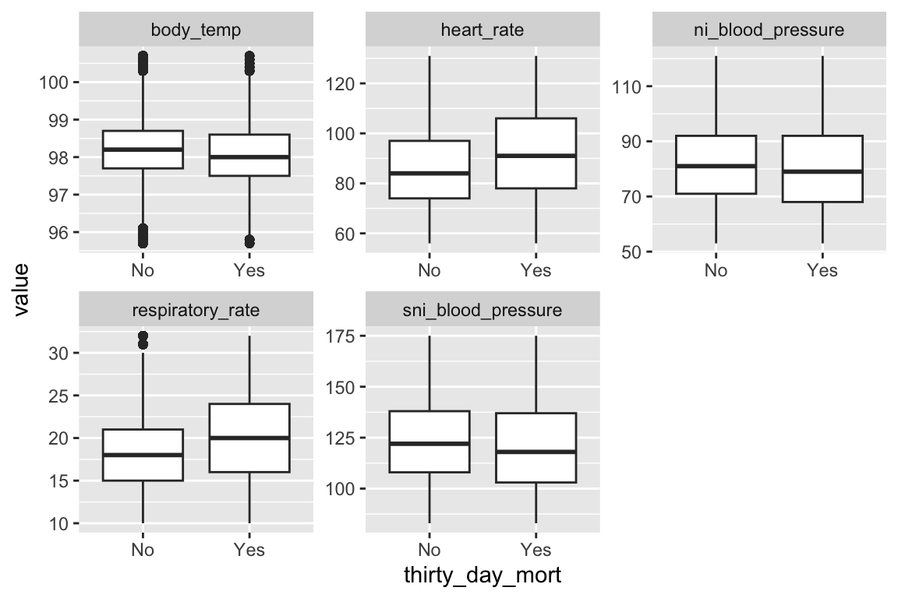
From the graph, for body temperature, mean non-invasive blood pressure and systolic non-invasive blood pressure, we could observe that the mean and range of those people died during 30 days after admission of ICU are lower than those of people alive during 30 days. On the contrary, for respiratory rate, and heart rate, the mean and range of those people died during 30 days after admission of ICU are higher than those of people alive during 30 days. Body temperate of patients is symmetric and seem to be normal distribution. Heart rate is right skewed.
-thirty_day_mort vs first ICU unit ::: {.cell layout-align=“center”}
#summary plot
table(mimic_icu_cohort$thirty_day_mort,mimic_icu_cohort$first_careunit)
Cardiac Vascular Intensive Care Unit (CVICU) Coronary Care Unit (CCU)
No 9191 5382
Yes 257 716
Medical Intensive Care Unit (MICU)
No 8823
Yes 1384
Medical/Surgical Intensive Care Unit (MICU/SICU) Neuro Intermediate
No 7768 1283
Yes 1051 28
Neuro Stepdown Neuro Surgical Intensive Care Unit (Neuro SICU)
No 614 1157
Yes 12 223
Surgical Intensive Care Unit (SICU) Trauma SICU (TSICU)
No 7355 6280
Yes 883 658::: ::: {.cell layout-align=“center”}
#barplot
mimic_icu_cohort %>%
select(thirty_day_mort,first_careunit) %>%
ggplot() +
geom_bar(mapping = aes(thirty_day_mort,fill=first_careunit))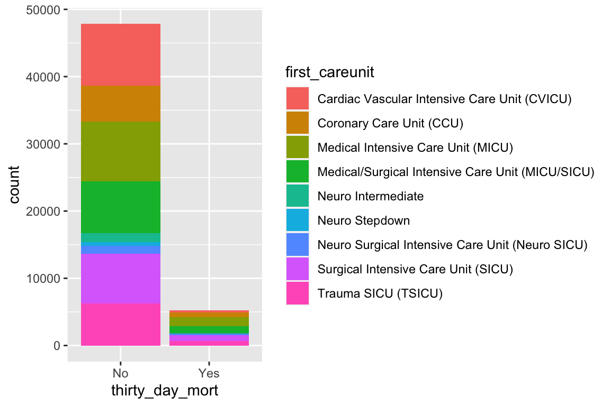
::: For patients alive during 30 thirty days in ICU, they tend to be accepted CVICU, MICU/SICU ad MICU for the first care. For patients dead during 30 thirty days in ICU, their most often first care is MICU, MICU/SICU and then SICU.